Promotor de Justiça visita a Escola Estadual Dr. João Beraldo e debate direitos e cidadania com os protagonistas

No dia 25 de março de 2026, a E.E. Dr. João Beraldo recebeu a visita do promotor de Justiça do Ministério Público de Minas Gerais para uma atividade especial com os protagonistas do EMTI. A ação reforça o compromisso da escola com a formação cidadã integral dos seus alunos.
A visita fez parte de uma iniciativa do Ministério Público voltada para escolas de Ensino Médio, com o objetivo de aproximar os jovens do sistema de justiça e ampliar o conhecimento sobre direitos e deveres constitucionais. Na Escola Estadual Dr. João Beraldo, a atividade tomou a forma de uma roda de conversa direta e participativa com os alunos do EMTI.
O promotor abordou temas como o Estatuto da Criança e do Adolescente (ECA), o papel do Ministério Público na defesa dos direitos coletivos, a importância do voto consciente e a responsabilidade civil e criminal dos jovens maiores de 16 anos. A conversa foi interativa: os alunos fizeram perguntas, trouxeram situações do cotidiano e demonstraram maturidade ao debater questões complexas da vida em sociedade.
"É exatamente esse tipo de atividade que complementa o Projeto de Vida do EMTI. Queremos que nossos protagonistas saiam daqui sabendo não só de tecnologia e mercado de trabalho, mas também de seus direitos e de como participar ativamente da democracia", destacou a direção da escola.
A iniciativa fortalece a parceria entre a escola e as instituições públicas do município, criando pontes entre a educação formal e a realidade social vivida pelos jovens de Carlos Chagas. O promotor elogiou o engajamento dos alunos e sinalizou interesse em ampliar a parceria com novas ações ao longo do ano.
Galeria de Fotos
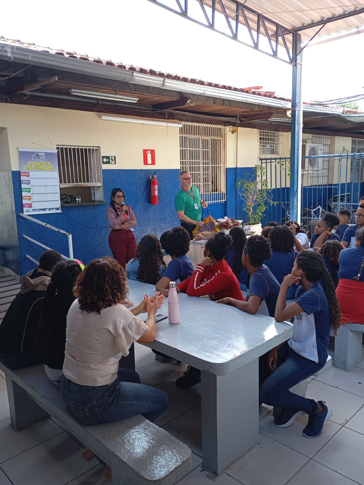

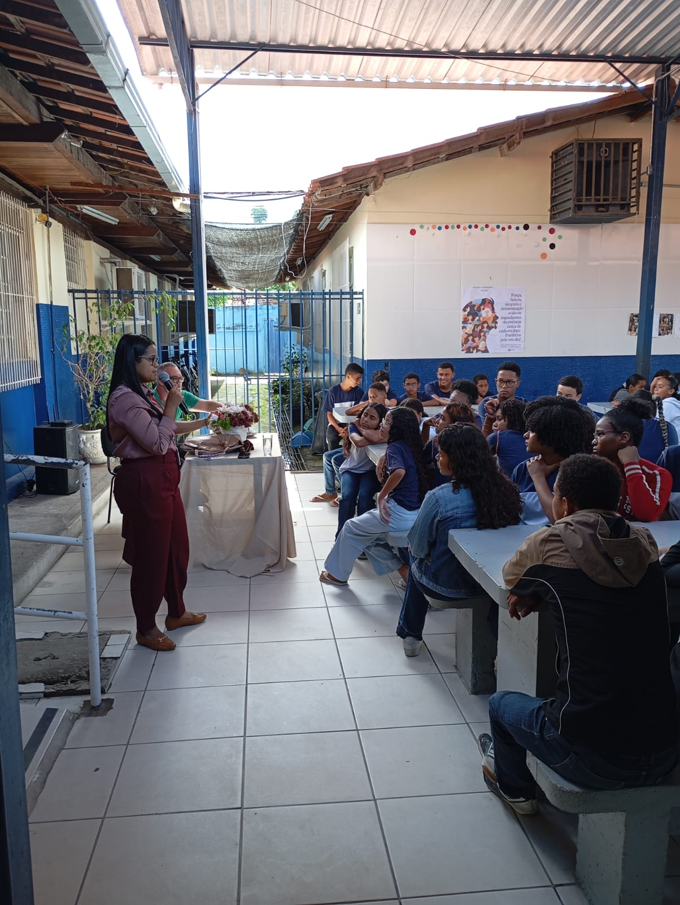
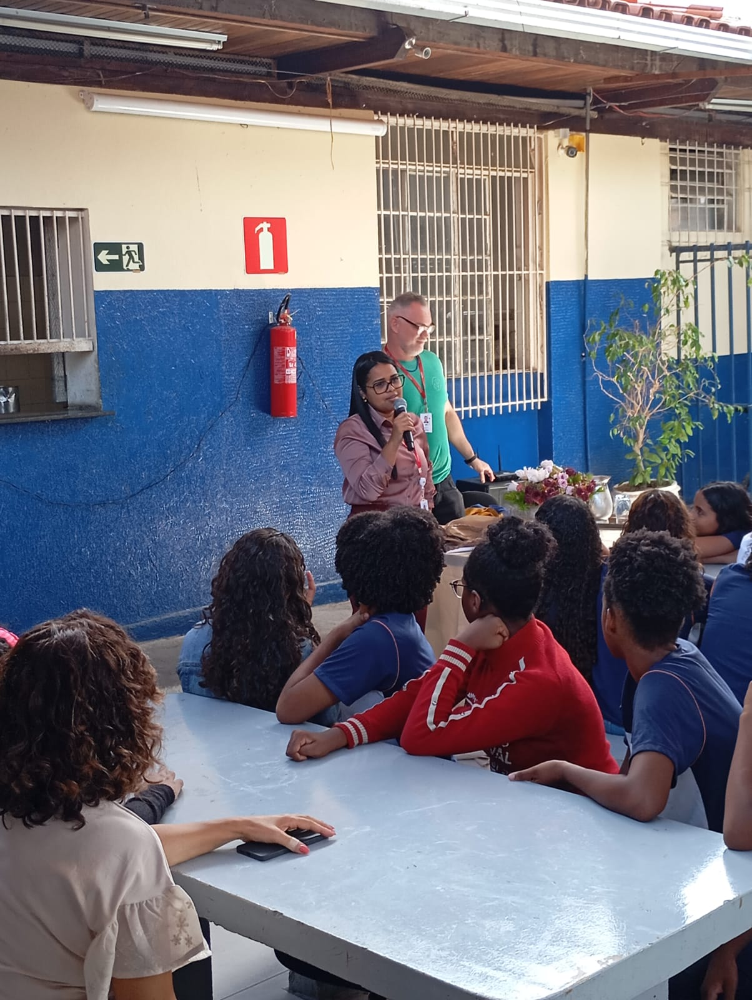
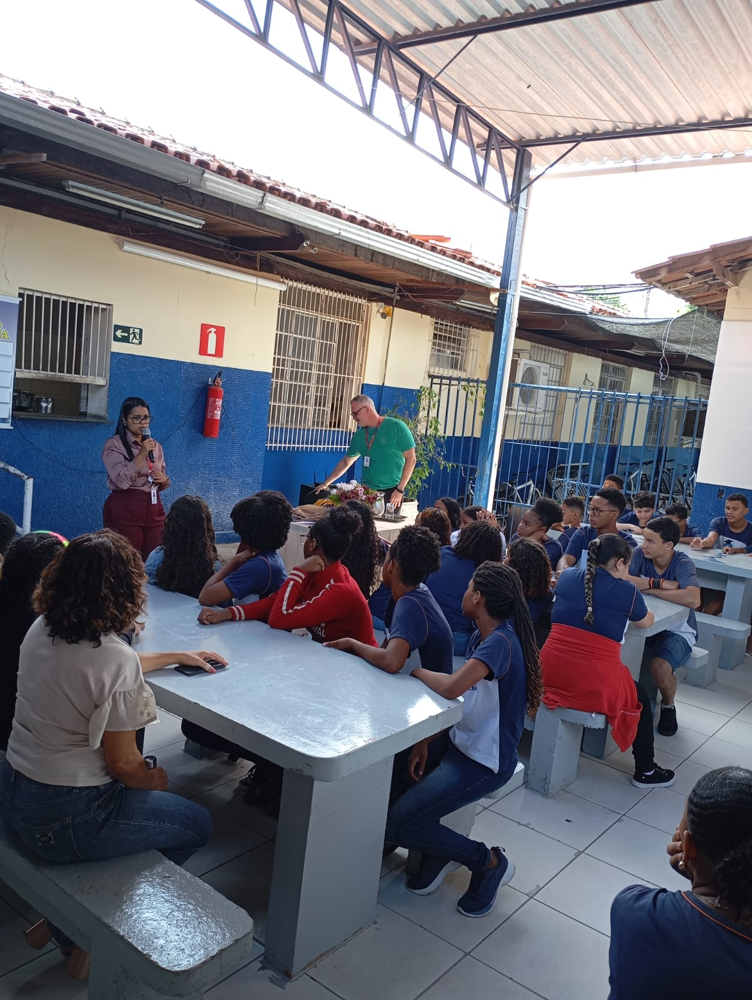
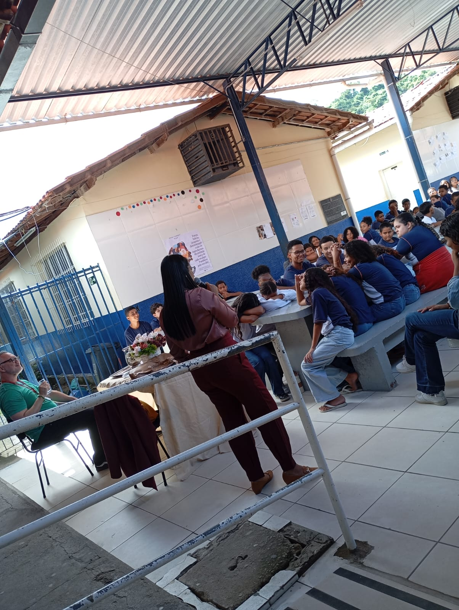
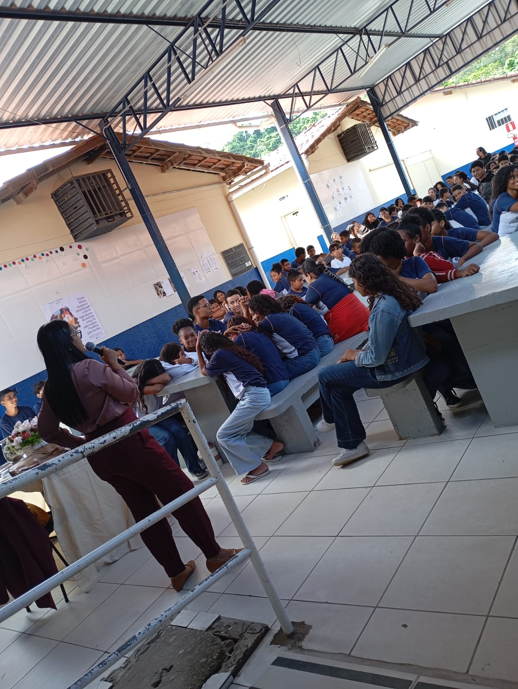
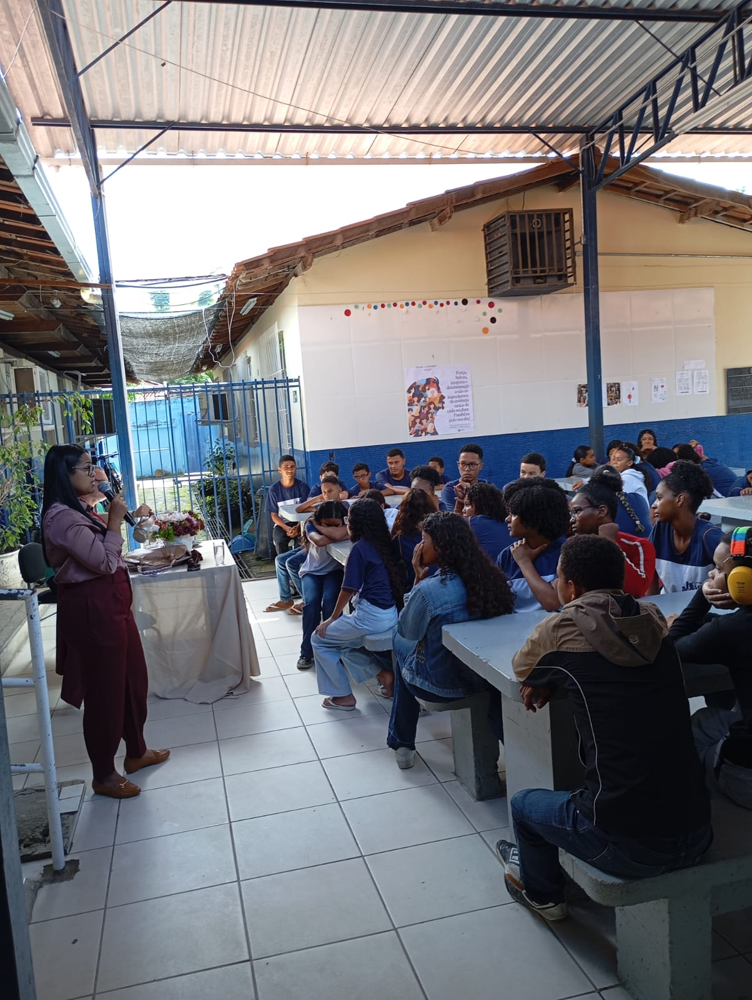
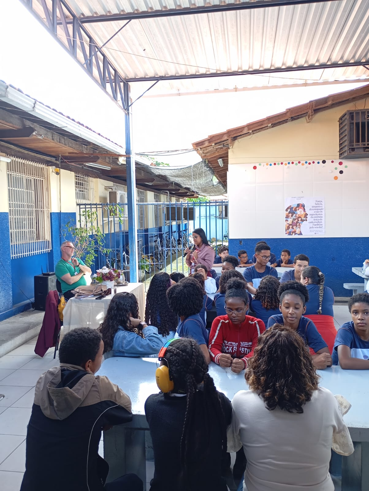
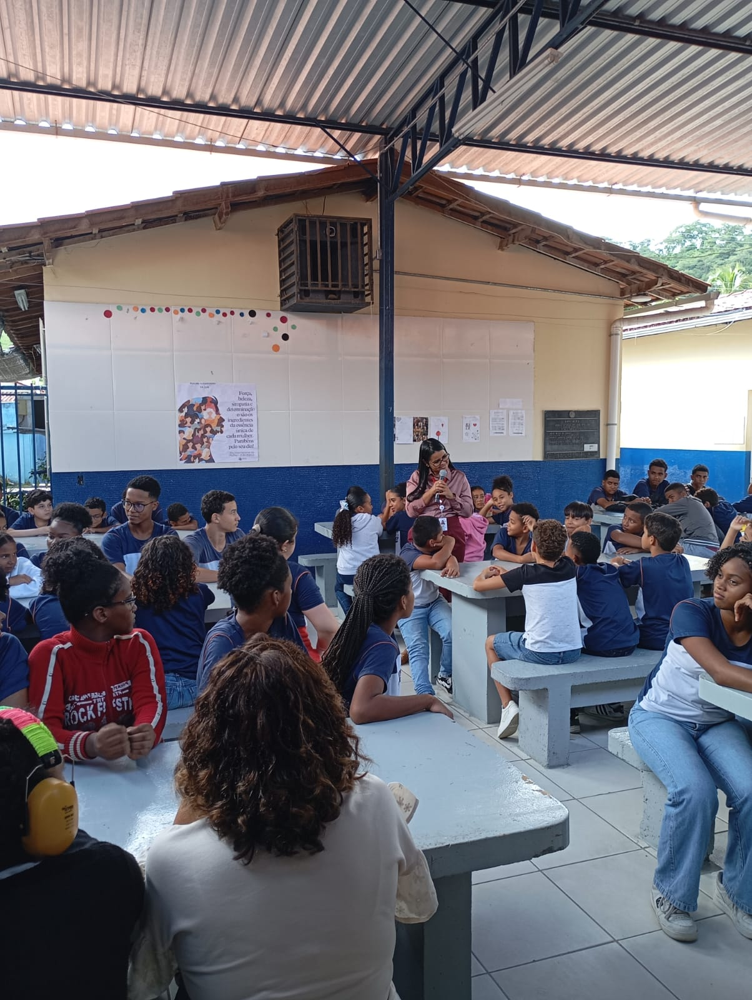
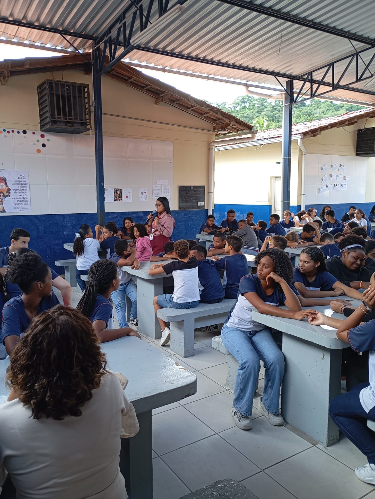
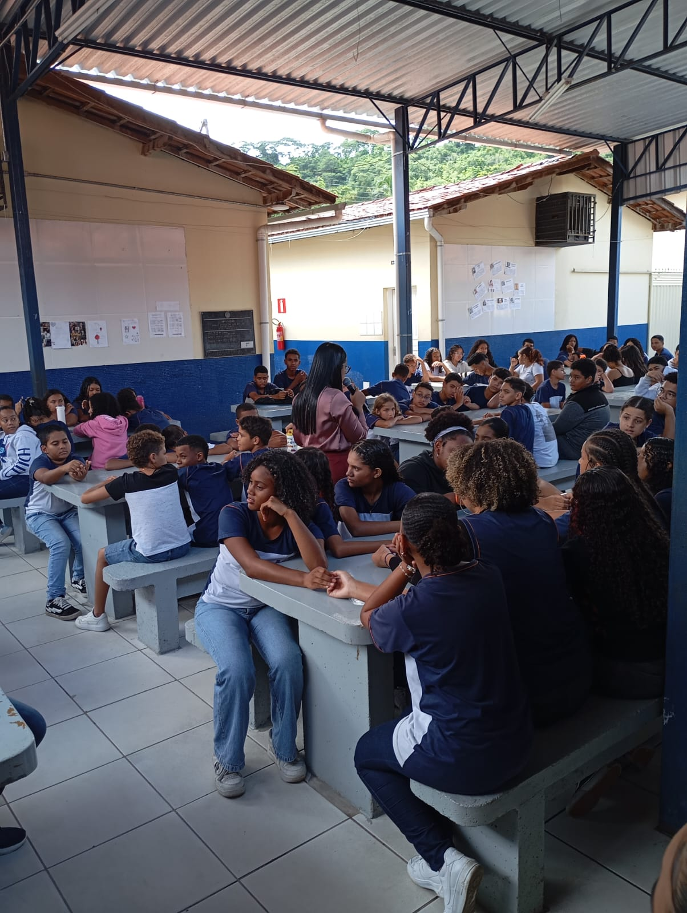
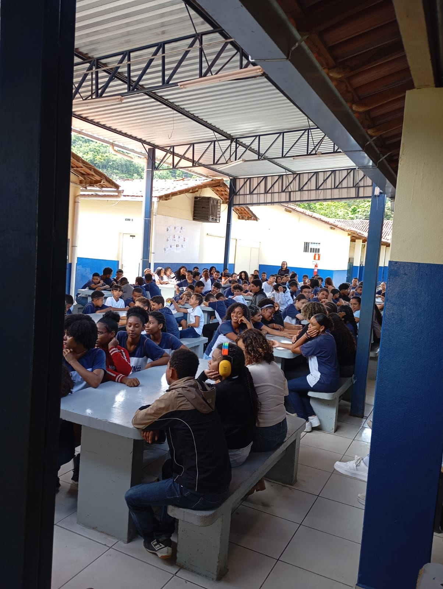